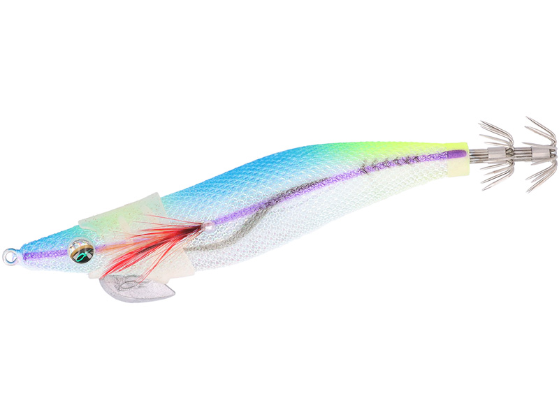
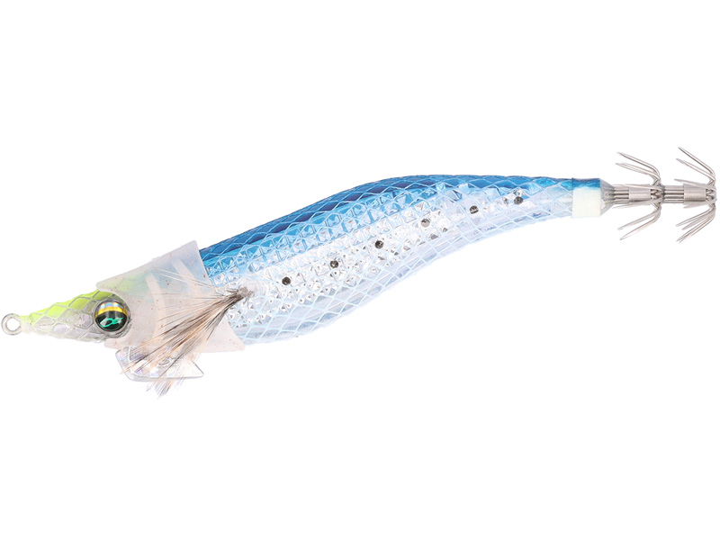
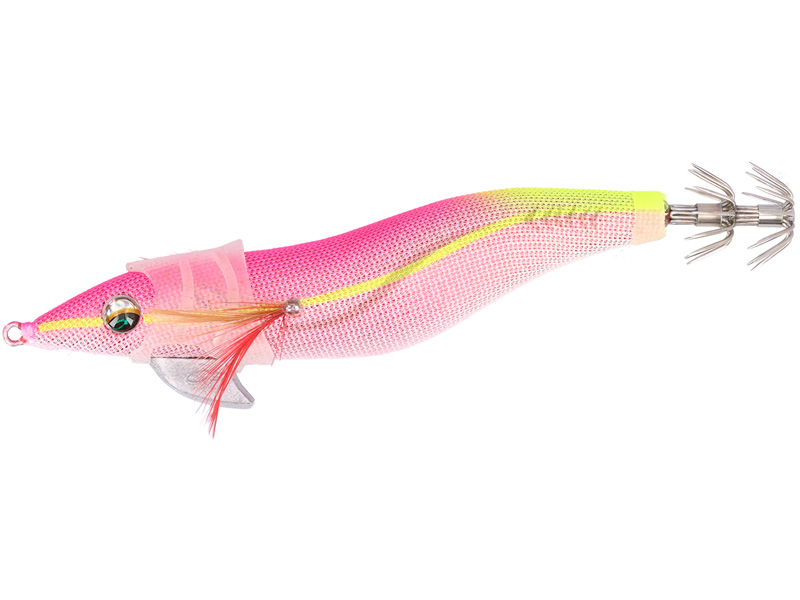

エメラルダス ドリフトマスク
（EMERALDAS DRIFT MASK）
エメラルダス ドリフトマスク（EMERALDAS DRIFT MASK）はDAIWA（ダイワ）のエギ用の着脱式マスクです。
エギの頭にかぶせるだけで、浮力のあるソフト素材と2重のエラが水を掴み、フォール速度を抑えてくれるパーツ。新しいエギを買い足さなくても、手持ちのエギをゆっくり沈むエギに変えられるのが最大の魅力です。

画像出典:DAIWA公式HP
スペック
- メーカー
- DAIWA（ダイワ）
- タイプ
- エギ用 着脱式マスク（フォール調整パーツ）
- サイズ
- 3.0号用／3.5号用
- 入数
- 3個
- カラー
- ケイムラ／グロー／ピンクグロー
- 素材
- 浮力を持たせたソフトマテリアル（アミノX配合）
- ターゲット
- アオリイカ
- 価格
- 680円（税別）
- 発売
- 2026年3月
▼今すぐチェック

エメラルダス ドリフトマスクの特徴
かぶせるだけで、手持ちのエギを「ゆっくり見せるエギ」に変えるマスク
-
2重のエラが水を掴んでフォールを遅くする
マスクの側面にある2重のエラがフォール中に水を受け止め、素材そのものの浮力と合わせて沈む速さを抑える。フォールの時間を長く取れるので、イカにエギを見せる時間が増える。
-
安定したフォール姿勢でナチュラルにアピール
ただ遅くするだけでなく、フォール姿勢が安定するのもポイント。ふらつかずにスーッと沈むので、警戒心の強いイカにも違和感を与えにくい。
-
アミノX配合＋発光カラーで視覚と匂いの両方に効く
アミノ酸特殊誘引成分「アミノX」を配合。カラーは紫外線で光るケイムラと、夜光で光るグロー・ピンクグローの3色で、エギ本体のカラーに頭部のアクセントを足せる。
エメラルダス ドリフトマスクの使い方
使い方はシンプルで、エギのサイズに合った号数のマスクを、エギの頭（目のあたり）にかぶせるだけ。普段どおりシャクってダートさせ、フォールでじっくり抱かせる。マスクを付けるとフォールがゆっくりになるので、着底までのカウントはいつもより長めに取りましょう。
シャクリの後のフォールで乗らない、追ってくるのに抱かない、という時に付けて、見せる時間を延ばすのが基本の使い方です。反応が出たら外して、ノーマルのフォールと比べてみるのもオススメ。
エメラルダス ドリフトマスクの得意な状況
水深の浅いシャローや藻の上など、エギを速く沈めたくない場所が最大の出番。
イカの活性が低く、フォールをじっくり見せたい時や、潮の流れに乗せてエギを漂わせたい時にも向いている。シャロー用のエギを買い足す前に、手持ちのエギで試せる1つです。
ワンポイント
ドリフトマスクはダイワ以外の他社製のエギにも装着できます。ただし、エギの形によってはマスクが羽根やシンカーに当たることがあるので、付けたときに無理な力がかかっていないか確認してから使いましょう。
ダイワの「エメラルダス アモラスジョイント」シリーズへの装着はおすすめしません。ヘッドの上にアイがあるため、ダイワ公式でも装着できないとされています。
特殊な素材を使っているので、ほかの素材のワームやパーツと同じケースに入れて保管しないように注意してください。
オススメカラー
エメラルダス ドリフトマスクは全3色展開（3.0号用・3.5号用とも共通）。それぞれの特徴を紹介します。

ケイムラ紫外線で青白く光るケイムラ。日中の澄み潮や、朝夕マズメにさりげなくアピールしたい時に。

グロー夜光で光る定番カラー。ナイトゲームや、深場・濁り潮でエギの存在感を出したい時に。

ピンクグローピンク系の夜光カラー。ピンク系のエギと合わせて、夜やローライトでのアピールを強めたい時に。
画像出典:DAIWA公式HP
エメラルダス ドリフトマスクに似ているルアー
-
 キャストランナー
クレイジーオーシャン
詳細はこちら＞
キャストランナー
クレイジーオーシャン
詳細はこちら＞
シンカーハンガー付きで、その場で沈下速度を変えられるエギ。手持ちのエギを遅くするならドリフトマスク、1本で速さを調整したいならキャストランナー。
-
 エギ政 改
DUO
詳細はこちら＞
エギ政 改
DUO
詳細はこちら＞
NORMALとSHALLOWの2タイプでレンジを使い分けるエギ。最初からゆっくり沈むエギが欲しいなら、SHALLOWタイプも選択肢になる。
-
 エメラルダス ダートLC ネガード
ダイワ
詳細はこちら＞
エメラルダス ダートLC ネガード
ダイワ
詳細はこちら＞
着脱式のFDガードで根掛かりを減らした同じエメラルダスのエギ。後から付けるパーツで状況に合わせるという考え方が共通する。